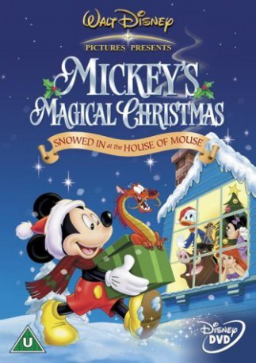

#8608 Mickys Grösstes Weihnachtsfest
Alternativ: Mickey's Magical Christmas: Snowed in at the House of Mouse
 
 IMDB-Wertung: 6.8 / 10
IMDB-Wertung: 6.8 / 10  Metascore: 0
Metascore: 0 
After everyone is snowed in at the House of Mouse, Mickey suggests they throw their own Christmas party. Everyone is happy, except for Donald who just isn't in to the Christmas spirit. So Mickey shows a series of cartoons that show just what Christmas is all about. It features a star studded cast of Disney characters from everyone's favorite animated Disney movies.
Jahr: 2001
Dauer: 59 Minuten
FSK:
Land: USA Studio: Walt Disney Home EntertainmentTonspuren:
Untertitel:
Auflösung: SD (480x368) Größe: 700 MB
Genre: Musik, Komödie, Abenteuer, Fantasy, Animation/Trick, Familie, Weihnachten
Regisseur: Tony Craig, Roberts Gannaway, Rick Calabash
Drehbuch: Thomas Hart
Soundtrack: Michael Tavera
Darsteller:
Datei: X:\Kinder Disney HD\Classic Cartoon\Mickys Grösstes Weihnachtsfest (2001, FSK, 480x368).avi seit 25.03.2018
Festplatte: Kinder-Filme+Trick
 Es gibt insgesamt 22 Filme in der Gruppe 'Kinder Disney HD\Classic Cartoon'
Es gibt insgesamt 22 Filme in der Gruppe 'Kinder Disney HD\Classic Cartoon'